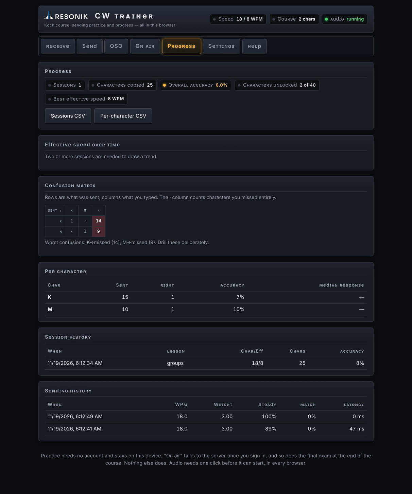

فهرست
فصل 8زبانهٔ Progress


8.1چه چیزی سنجیده میشود
Sessions / Characters copied / Overall accuracyجمع کلّ هرچه در زبانهٔ Receive کردهاید.Characters unlockedجای شما در دوره، از چهل.Best effective speedبالاترین سرعت مؤثری که جلسهای را با آن تمام کردهاید.Effective speed over timeنمودار جلسههای شما. برای کشیدن روند دو یا بیشتر لازم است.Confusion matrixجدول آنچه فرستاده شد (ردیفها) در برابر آنچه تایپ کردید (ستونها). «همیشه اشتباه میکنم» را به «S را H میشنوم» تبدیل میکند که با «My own set» میتوان تمرینش کرد.Per-character accuracy, worst firstهر کاراکتر با اینکه چند بار درست دریافتش کردید. بالای این فهرست، مجموعهٔ تمرین بعدی شماست.Session history / Sending historyهر جلسهٔ دریافت و هر ارسال تحلیلشده، با تاریخ، درس، سرعتها، دقت، وزن، یکنواختی و تأخیر.
Sessions CSV و Per-character CSV جدولها را برای صفحهگسترده دانلود میکنند.
کجا نگه داشته میشود
پیشرفت در این مرورگر، روی این دستگاه، در این نشانی است. به مرورگر دیگری دنبالتان نمیآید و پاک کردن دادههای مرورگر آن را میبرد. مرتب از Settings خروجی بگیرید — آن فایل تنها پشتیبانی است که وجود دارد، مگر سوابق تمرین را روشن کرده باشید (فصل ۷)، که در آن صورت خلاصهٔ هر جلسه روی سرور هم نگه داشته میشود و اینجا به نام Across your devices پیدا میشود.